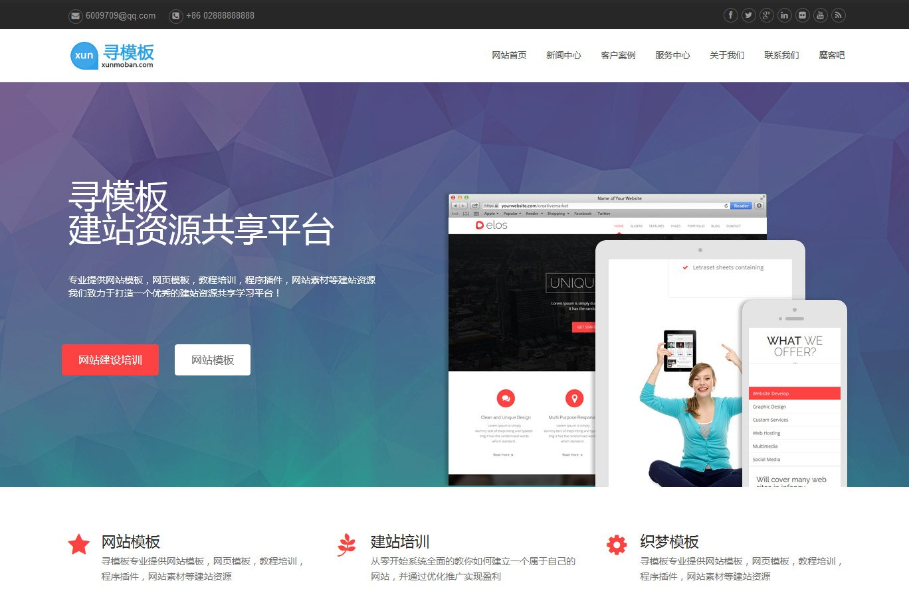

手机应用



原生App切图的那些事儿
最小的分辨率是320x480，我们把这个尺寸定为基准界面尺寸（baseline），基准尺寸所用的图标定为1倍图（1x）。
在 实际设计过程中，为了降低设计成本，一般拿设备最高的分辨率作为设计稿的原始尺寸，拿iphone来说就是iphone5或5s的640x1136啦，当 然也可以用iphone4或4s的640x960，因为宽度都是640px，他们切图的标准是一样的。显然，以1倍图的基准尺寸（宽320px）为相对的 参考依据，宽640px的设计稿，以原始尺寸切出来的图标称为2倍图（2x）。
有人可能会问：为什么不拿320px作为设计稿的原始尺寸呢？因为1倍图放大成为2倍图远比2倍图缩小成1倍图来得模糊！
于是，在不考虑iphone6和iphone 6 plus的情况下，为了适配iphone，每个图标需要切两份。
Android开源自由的代价就是设备规范的不可控，市面上充斥着各种品牌的android手机，有着各种各样的尺寸和分辨率，为了适配各种不同分辨率的设备，同一个图标需要切成N份，每一份对应一个尺寸。
另外需要注意的是，Android里面开发用的尺寸单位是dp或sp（dp为元素表现尺寸，sp为字体尺寸）而不是iphone中的px。。。
- 时间: 2016-03-07 19:59
- 作者: admin
- 点击: 次